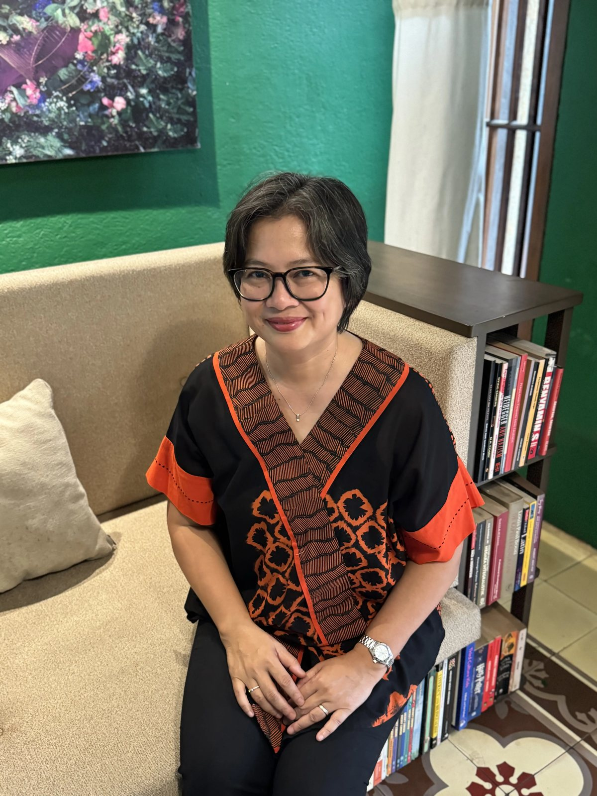

For audiences
Keynote talks
A thoughtful perspective for audiences gathering around learning, leadership, reading, or growth.
Explore speaking✳ Reading, leadership & lifelong learning
Dr Santi’s Story brings together parents, educators, and leaders who see how everyday habits—how we talk, read, and care for one another—shape the way we grow and lead, at home and at work.
It shares perspectives and programs on learning, leadership, and literacy for families, schools, communities, and organisations.

A thoughtful, trusted voice for people who want perspective they can understand and use.
A short introduction
Meet Santi Dharmaputra, PhD.
Dr Santi’s Story
Dr Santi Dharmaputra works across education, research, and human development.
Through reading and conversation, she brings these interests into homes, schools, and workplaces.
Read Dr Santi’s storyPhD in Sociology & Language
Education, research & organisational leadership
Indonesia · Australia · the Netherlands
Leadership in the home
Before leadership becomes a title at work, it takes shape at home—in how parents listen, make choices, repair after conflict, stay curious, and make room for others.
Dr Santi’s Story connects literacy and reflection with the small, everyday practices that help a family grow together.
Explore Leadership in the HomeWays to work together
Each format begins with the people in the room - what they are navigating, what they want to understand, and what they can carry forward.
A thoughtful perspective for audiences gathering around learning, leadership, reading, or growth.
Explore speakingPractical ways to build reading habits, reflective conversations, and everyday leadership at home.
Explore workshopsPurposeful sessions for educators and leaders who want to build curiosity into everyday culture.
Explore programsMoments from our gatherings
Scenes from Cartea and Fantasia.
Selected perspectives